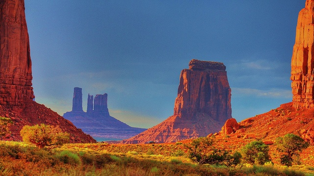
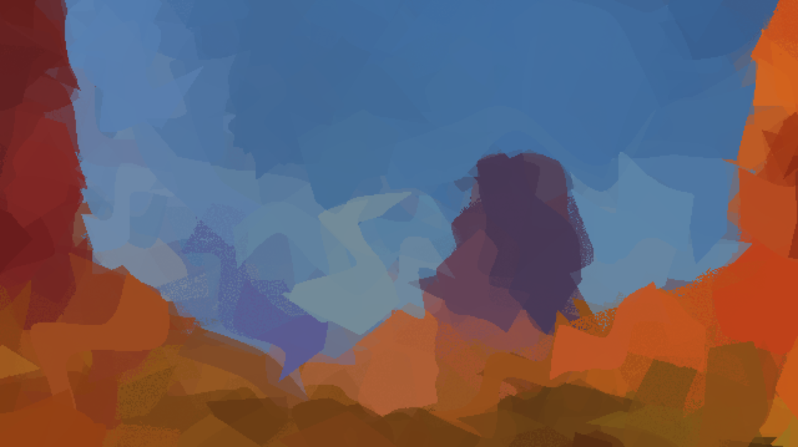
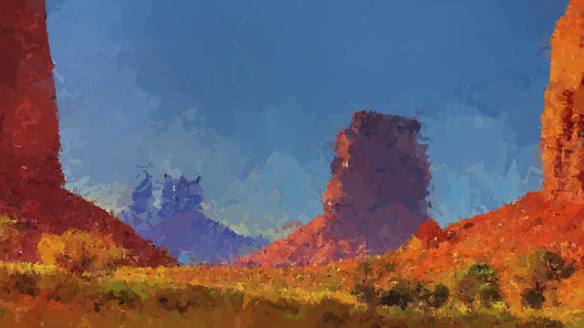

Introduction
This project started as an exploration of algorithmic art, and it has evolved into approximating images from circles to recreating them as paintings using hierarchical brush strokes. The goal is to simulate the process of traditional painting, where each stroke builds upon the last, gradually refining the image into something that looks, and maybe feels, hand-painted.
The results are painting-esque with visible brush strokes, color mixing, and the organic imperfections that make traditional media so compelling. The algorithm builds each painting in stages: first blocking in the overall composition with large, loose brushes, then progressively refining with smaller strokes until fine details emerge.
Building this system taught me about computer graphics (windowing and the like), color theory, and the complexity of modeleling brush strokes. The mathematics behind creating natural-ish-looking paint marks involves interval splines, Catmull-Rom interpolation, and simulation of paint physics.



What is Algorithmic Painting?
Algorithmic painting is about trying to recreate the physical act of painting. Instead of working pixel by pixel, we:
- Start with broad compositional strokes to establish overall shape and color
- Gradually refine with smaller brushes to add detail
- Mix colors on the canvas when wet paint meets wet paint
- ... and other things I haven't implemented yet
Rather than analyzing pixels (we do that too for coloring but let's not split hairs), painterz generates random brush strokes. Rather than applying filters, it mixes virtual paint. The challenge lies in making (~)thousands of algorithmic decisions that collectively produce something that feels hand-painted.
This approach creates paintings with visible texture, natural color variations, and sort of happy accidents that make traditional media so expressive. Each brush stroke has width, length, pressure, and angle - and they interact with the existing paint layers in realistic ways.
Architecture: The Hierarchical Painting Pipeline
Painterz follows the classical painting approach of working from general to specific. The system processes each painting through five distinct stages, each using different brush sizes and painting strategies:
┌─────────────┐ ┌─────────────┐ ┌─────────────┐ ┌─────────────┐
│ Original │ │ Image │ │ Brush │ │ Final │
│ Image │───>│ Pyramid │───>│ Stroke │───>│ Painting │
│ │ │ │ │ Generation │ │ │
└─────────────┘ └─────────────┘ └─────────────┘ └─────────────┘
│ │
v v
┌─────────────┐ ┌─────────────┐
│ Stage 0: │ │ Interval │
│ Composition │ │ Spline │
│ (600px) │ │ Rasterizer │
│ │ │ │
│ Stage 1: │ │ Paint Mixing│
│ Form Defn │ │ System │
│ (250px) │ │ │
│ │ │ Dry Brush │
│ Stage 2: │ │ Effects │
│ Surface │ │ │
│ (250px) │ └─────────────┘
│ │
│ Stage 3: │
│ Finishing │
│ (30px) │
│ │
│ Stage 4: │
│ Fine Detail │
│ (8px) │
└─────────────┘
Each stage works on a different version of the target image - from heavily blurred compositions to edge-enhanced details - and uses progressively smaller brushes with higher color accuracy.
Image Pyramid: Visualizing levels of composition
Human artists naturally see images at multiple levels of detail simultaneously. They can focus on fine texture while remaining aware of overall composition. To replicate this, Painterz creates an image pyramid - multiple versions of the target image processed for different stages of the painting process.
┌── ImagePyramid::new ─────────────────────────────────────────────────────────────┐
│ │
│ let levels = vec![ │
│ // Stage 0: Composition - very blurred, coarse details │
│ downsample_and_blur(original, 0.25, 4.0), │
│ │
│ // Stage 1: Form definition - medium blur, basic shapes │
│ downsample_and_blur(original, 0.5, 2.0), │
│ │
│ // Stage 2: Surface details - slight blur, most details visible │
│ apply_blur(original, 0.8), │
│ │
│ // Stage 3: Finishing touches - original resolution, edge-enhanced │
│ enhance_edges(original, 1.2), │
│ │
│ enhance_edges(original, 1.9), │
│ ]; │
└──────────────────────────────────────────────────────────────────────────────────┘
Stage Parameters: Matching Brush Behavior to Painting Phase
Each stage has carefully tuned parameters that control brush behavior, color accuracy, and stroke placement strategy:
╔══ ImagePyramid::new ════════════════════╗
║ ║
║ let stage_params = vec![ ║
║ StageParameters { ║
║ min_brush_size: 300, ║
║ max_brush_size: 600, ║
║ stroke_count: 800, ║
║ color_accuracy: 0.65, ║
║ edge_emphasis: 0.2, ║
║ update_frequency: 5, ║
║ }, ║
║ StageParameters { ║
║ min_brush_size: 150, ║
║ max_brush_size: 250, ║
║ stroke_count: 1600, ║
║ color_accuracy: 0.80, ║
║ edge_emphasis: 0.5, ║
║ update_frequency: 10, ║
║ }, ║
║ StageParameters { ║
║ min_brush_size: 150, ║
║ max_brush_size: 250, ║
║ stroke_count: 3200, ║
║ color_accuracy: 0.90, ║
║ edge_emphasis: 0.8, ║
║ update_frequency: 20, ║
║ }, ║
║ StageParameters { ║
║ min_brush_size: 15, ║
║ max_brush_size: 30, ║
║ stroke_count: 6400, ║
║ color_accuracy: 0.95, ║
║ edge_emphasis: 0.9, ║
║ update_frequency: 15, ║
║ }, ║
║ StageParameters { ║
║ min_brush_size: 4, ║
║ max_brush_size: 8, ║
║ stroke_count: 6400, ║
║ color_accuracy: 0.99, ║
║ edge_emphasis: 0.9, ║
║ update_frequency: 15, ║
║ }, ║
║ ]; ║
╚═════════════════════════════════════════╝
The progression from 600px brushes with 65% color accuracy to 8px brushes with 99% accuracy mirrors how painters work - establishing the broad composition first, then gradually refining details.
Smart Image Processing
Each pyramid level uses different processing techniques. Early stages work with heavily blurred, downsampled images to encourage broad strokes. Later stages use edge-enhanced versions to guide detail work. Here's a sample snippet showing how image processing works for the system:
┌────────────────────────────────────────────────────────────────────────────────────────────────────────────────────┐
│ fn enhance_edges(image: &Image, strength: f32) -> Image { │
│ let mut enhanced_pixels = image.pixels.clone(); │
│ │
│ // Simple edge enhancement using unsharp mask │
│ for y in 1..(image.height - 1) { │
│ for x in 1..(image.width - 1) { │
│ let center = image.color_at([x, y]); │
│ │
│ // Calculate average of surrounding pixels │
│ let mut avg_r = 0f32; │
│ let mut avg_g = 0f32; │
│ let mut avg_b = 0f32; │
│ let mut count = 0f32; │
│ │
│ for dy in -1i32..=1 { │
│ for dx in -1i32..=1 { │
│ if dx == 0 && dy == 0 { continue; } │
│ let [r, g, b] = image.color_at([(x as i32 + dx) as u32, (y as i32 + dy) as u32]); │
│ avg_r += r as f32; │
│ avg_g += g as f32; │
│ avg_b += b as f32; │
│ count += 1.0; │
│ } │
│ } │
│ │
│ avg_r /= count; │
│ avg_g /= count; │
│ avg_b /= count; │
│ │
│ // Enhance difference from average │
│ let enhanced_r = (center[0] as f32 + (center[0] as f32 - avg_r) * strength).clamp(0.0, 255.0) as u8; │
│ let enhanced_g = (center[1] as f32 + (center[1] as f32 - avg_g) * strength).clamp(0.0, 255.0) as u8; │
│ let enhanced_b = (center[2] as f32 + (center[2] as f32 - avg_b) * strength).clamp(0.0, 255.0) as u8; │
│ │
│ let idx = ((y * image.width + x) * 3) as usize; │
│ enhanced_pixels[idx] = enhanced_r; │
│ enhanced_pixels[idx + 1] = enhanced_g; │
│ enhanced_pixels[idx + 2] = enhanced_b; │
│ } │
│ } │
│ │
│ Image { │
│ width: image.width, │
│ height: image.height, │
│ pixels: enhanced_pixels, │
│ } │
│ } │
└────────────────────────────────────────────────────────────────────────────────────────────────────────────────────┘
Paint Mixing: Simulating Wet-on-Wet Techniques
Another difficult aspect of algorithmic painting is accurately simulating the behavior of real paint. When you apply fresh paint over wet paint, the colors mix. When paint dries, it becomes stable. Painterz implements a layered paint system that tracks wetness, thickness, and age for painted pixels.
┌────────────────────────────────────────────────────────────────────────┐
│ #[derive(Clone, Copy, Debug)] │
│ struct PaintLayer { │
│ color: [u8; 3], │
│ thickness: f32, // Paint thickness (0.0 to 1.0) │
│ wetness: f32, // How wet the paint is (0.0 to 1.0) │
│ age: u32, // How long since applied (in iterations) │
│ } │
│ │
│ struct PaintSurface { │
│ width: u32, │
│ height: u32, │
│ layers: Vec<Vec<PaintLayer>>, // Stack of paint layers per pixel │
│ max_layers: usize, │
│ } │
└────────────────────────────────────────────────────────────────────────┘
Wet-on-Wet Color Mixing
When fresh paint meets wet paint, the system performs subtractive color mixing - an attempt at simulating how pigments actually combine:
┌───────────────────────────────────────────────────────────────────────────────┐
│ fn mix_colors( │
│ base_color: [u8; 3], │
│ base_thickness: f32, │
│ new_color: [u8; 3], │
│ new_thickness: f32, │
│ wetness_factor: f32, │
│ ) -> [u8; 3] { │
│ let mixing_strength = wetness_factor * 0.4; │
│ │
│ // Favor the new color more heavily to maintain vibrant colors │
│ let base_weight = base_thickness * mixing_strength; │
│ let new_weight = new_thickness; // New paint dominates more │
│ let total_weight = base_weight + new_weight; │
│ │
│ if total_weight < 0.001 { │
│ return new_color; // Default to new color if weights are negligible │
│ } │
│ │
│ // Convert to subtractive mixing space (simplified) │
│ let new_ratio = new_weight / total_weight; │
│ let mixed_r = subtractive_mix(base_color[0], new_color[0], new_ratio); │
│ let mixed_g = subtractive_mix(base_color[1], new_color[1], new_ratio); │
│ let mixed_b = subtractive_mix(base_color[2], new_color[2], new_ratio); │
│ │
│ [mixed_r, mixed_g, mixed_b] │
│ } │
│ │
│ fn subtractive_mix(base: u8, new: u8, mix_ratio: f32) -> u8 { │
│ // Simple subtractive mixing approximation │
│ let base_f = 1.0 - (base as f32 / 255.0); // Convert to absorption │
│ let new_f = 1.0 - (new as f32 / 255.0); │
│ │
│ let mixed_absorption = base_f * (1.0 - mix_ratio) + new_f * mix_ratio; │
│ let mixed_reflection = 1.0 - mixed_absorption; │
│ │
│ (mixed_reflection * 255.0).clamp(0.0, 255.0) as u8 │
│ } │
└───────────────────────────────────────────────────────────────────────────────┘
This creates natural color variations, the kind you see in real paintings - where new strokes subtly blend with underlying layers, creating organic transitions rather than harsh digital edges.
Aging and Drying
Paint doesn't stay wet forever. The system gradually reduces wetness over time, preventing unrealistic mixing between strokes applied far apart in the painting process.
Interval Splines: The Mathematics of Natural Brush Strokes
The core of realistic brush simulation lies in interval splines - a technique from computer graphics research for creating natural, variable-width strokes. Unlike simple lines, real brush strokes have complex shapes: they taper naturally, vary in width along their length, and follow curved paths.
Control Shapes: Building Blocks of Brush Strokes
Each brush stroke begins as a series of control shapes - elliptical regions that define the brush's position, size, pressure, and orientation at key points along the stroke path:
┌───────────────────────────────────────────────────────────────────────────────────────────────┐
│ struct ControlShape { │
│ center: Point2D, │
│ width_interval: [f32; 2], // [min_width, max_width] - the interval part │
│ height_interval: [f32; 2], // [min_height, max_height] - for elliptical shapes │
│ angle: f32, // Orientation of the control shape │
│ pressure: f32, // Brush pressure at this point - for density │
│ } │
│ │
│ impl ControlShape { │
│ fn new(center: Point2D, width: f32, height: f32, angle: f32, pressure: f32) -> Self { │
│ // Create intervals with variation for natural brush effects │
│ let width_var = width * 0.15; // 15% variation │
│ let height_var = height * 0.1; // 10% variation for height │
│ │
│ Self { │
│ center, │
│ width_interval: [width - width_var, width + width_var], │
│ height_interval: [height - height_var, height + height_var], │
│ angle, │
│ pressure, │
│ } │
│ } │
│ ... │
└───────────────────────────────────────────────────────────────────────────────────────────────┘
Catmull-Rom Interpolation: Smooth Curves from Control Points
To create smooth, natural curves between control shapes, the system uses Catmull-Rom splines. This creates the flowing, organic paths that characterize hand-drawn strokes:
┌───────────────────────────────────────────────────────────────────────────────────────────────────────────────────────────────────┐
│ fn interpolate_center_catmull_rom(shapes: &[ControlShape], t: f32) -> Point2D { │
│ if shapes.len() < 2 { │
│ return shapes[0].center; │
│ } │
│ │
│ let segment_t = t * (shapes.len() - 1) as f32; │
│ let segment_index = segment_t.floor() as usize; │
│ let local_t = segment_t - segment_index as f32; │
│ │
│ if segment_index >= shapes.len() - 1 { │
│ return shapes[shapes.len() - 1].center; │
│ } │
│ │
│ // Get 4 control points for Catmull-Rom │
│ let p0 = if segment_index == 0 { shapes[0].center } else { shapes[segment_index - 1].center }; │
│ let p1 = shapes[segment_index].center; │
│ let p2 = shapes[segment_index + 1].center; │
│ let p3 = if segment_index + 2 < shapes.len() { shapes[segment_index + 2].center } else { shapes[shapes.len() - 1].center }; │
│ │
│ // Catmull-Rom interpolation formula │
│ let t2 = local_t * local_t; │
│ let t3 = t2 * local_t; │
│ │
│ let x = 0.5 * ( │
│ 2.0 * p1.x + │
│ (-p0.x + p2.x) * local_t + │
│ (2.0 * p0.x - 5.0 * p1.x + 4.0 * p2.x - p3.x) * t2 + │
│ (-p0.x + 3.0 * p1.x - 3.0 * p2.x + p3.x) * t3 │
│ ); │
│ │
│ let y = 0.5 * ( │
│ 2.0 * p1.y + │
│ (-p0.y + p2.y) * local_t + │
│ (2.0 * p0.y - 5.0 * p1.y + 4.0 * p2.y - p3.y) * t2 + │
│ (-p0.y + 3.0 * p1.y - 3.0 * p2.y + p3.y) * t3 │
│ ); │
│ │
│ Point2D::new(x, y) │
│ } │
└───────────────────────────────────────────────────────────────────────────────────────────────────────────────────────────────────┘
Natural Taper: Mimicking Brush Physics
Real brushes don't maintain constant width - they start thick, stay consistent through some middle length, then taper as the artist lifts the brush. The taper calculation attempts to capture this natural behavior:
┌──────────────────────────────────────────────────────────────────────────────────┐
│ fn calculate_natural_taper(t: f32) -> f32 { │
│ // Natural brush taper: starts thick, stays thick in middle, tapers at end │
│ if t < 0.15 { │
│ // Gentle start taper │
│ 0.7 + 0.3 * (t / 0.15).powi(2) │
│ } else if t > 0.75 { │
│ // Strong end taper (exponential for natural brush lift) │
│ let end_t = (t - 0.75) / 0.25; │
│ (1.0 - end_t).powi(3) * 0.9 + 0.1 │
│ } else { │
│ // Full width in middle with slight variation │
│ 1.0 │
│ } │
│ } │
└──────────────────────────────────────────────────────────────────────────────────┘
Stroke Rasterization: From Curves to Pixels
Converting smooth mathematical curves into discrete pixels requires careful rasterization. The system creates a polygon from the upper and lower boundaries of the interval spline, then uses ray casting to determine which pixels fall inside the stroke.
┌─────────────────────────────────────────────────────────────────────────────────────┐
│ fn rasterize_interval_spline(curve: &IntervalSplineCurve) -> BrushStroke { │
│ let mut points = Vec::new(); │
│ │
│ if curve.upper_boundary.is_empty() || curve.lower_boundary.is_empty() { │
│ return BrushStroke { │
│ points, │
│ centerline: curve.centerline.clone(), │
│ control_shapes: curve.control_shapes.clone(), │
│ }; │
│ } │
│ │
│ // Find bounding box │
│ let mut min_x = f32::INFINITY; │
│ let mut max_x = f32::NEG_INFINITY; │
│ let mut min_y = f32::INFINITY; │
│ let mut max_y = f32::NEG_INFINITY; │
│ │
│ for point in curve.upper_boundary.iter().chain(curve.lower_boundary.iter()) { │
│ min_x = min_x.min(point.x); │
│ max_x = max_x.max(point.x); │
│ min_y = min_y.min(point.y); │
│ max_y = max_y.max(point.y); │
│ } │
│ │
│ // Sample every integer coordinate in bounding box and test if inside stroke │
│ for y in (min_y.floor() as isize)..=(max_y.ceil() as isize) { │
│ for x in (min_x.floor() as isize)..=(max_x.ceil() as isize) { │
│ if is_point_inside_stroke(&Point2D::new(x as f32, y as f32), curve) { │
│ points.push([x, y]); │
│ } │
│ } │
│ } │
│ │
│ BrushStroke { │
│ points, │
│ centerline: curve.centerline.clone(), │
│ control_shapes: curve.control_shapes.clone(), │
│ } │
│ } │
└─────────────────────────────────────────────────────────────────────────────────────┘
Dry Brush Effects: Adding Texture and Character
Not every stroke should be perfect. Real brushes sometimes skip, create gaps, or leave bristle marks. The system occasionally applies dry brush effects to add texture and organic imperfection:
┌───────────────────────────────────────────────────────────────────────────────────────────┐
│ fn apply_dry_brush_effect(stroke: &mut BrushStroke, rng: &mut impl Rng) { │
│ let dryness = rng.gen_range(0.3..=0.7); // Random dryness level │
│ │
│ // Create gaps in the stroke (broken texture effect) │
│ stroke.points.retain(|_| { │
│ // Keep more points in center, fewer at edges │
│ rng.random::<f32>() > dryness * 0.4 // Remove up to 28% of points when very dry │
│ }); │
│ │
│ // Add texture variation to remaining points │
│ for point in &mut stroke.points { │
│ if rng.random::<f32>() < dryness * 0.3 { │
│ // Small random displacement for scratchy texture │
│ point[0] += rng.gen_range(-1i32..=1i32) as isize; │
│ point[1] += rng.gen_range(-1i32..=1i32) as isize; │
│ } │
│ } │
│ │
│ // Add some bristle marks along the centerline (very sparingly) │
│ if rng.random::<f32>() < 0.4 { // 40% chance for bristle marks │
│ add_sparse_bristle_marks(stroke, rng); │
│ } │
│ } │
└───────────────────────────────────────────────────────────────────────────────────────────┘
Bristle mark behaviour is also similar to this, applied with some rng, perpendicular to the stroke direction.
Stroke Evaluation: Teaching the Algorithm to Paint Better
Not every brush stroke improves the painting. The system evaluates each potential stroke by calculating how much it would reduce the difference between the current canvas and the target image. Only strokes that make the painting more accurate are applied.
┌────────────────────────────────────────────────────────────────────────────────────────────────────────────────────────┐
│ fn loss_delta( │
│ &self, │
│ target: &Image, │
│ changes: impl IntoIterator<Item = ([u32; 2], [u8; 3], f32)>, // position, color, paint_amount │
│ ) -> f32 { │
│ changes │
│ .into_iter() │
│ .map(|(pos, new_col, paint_amount)| { │
│ let target_color = target.color_at(pos); │
│ let current_color = self.get_visible_color(pos[0], pos[1]); │
│ │
│ // Simulate what the color would be after applying this paint │
│ let simulated_color = if paint_amount > 0.01 { │
│ // Check if there would be wet-on-wet mixing │
│ let idx = (pos[1] * self.width + pos[0]) as usize; │
│ let top_layer = self.layers[idx].last().unwrap(); │
│ let is_wet_on_wet = top_layer.wetness > 0.5 && top_layer.age < 8; // Match the updated threshold │
│ │
│ if is_wet_on_wet { │
│ mix_colors( │
│ current_color, │
│ top_layer.thickness, │
│ new_col, │
│ paint_amount, │
│ top_layer.wetness, │
│ ) │
│ } else { │
│ // Convert thickness to opacity with high minimum for consistency │
│ let opacity = (paint_amount * 0.3 + 0.7).clamp(0.7, 1.0); │
│ let inv_opacity = 1.0 - opacity; │
│ [ │
│ (current_color[0] as f32 * inv_opacity + new_col[0] as f32 * opacity) as u8, │
│ (current_color[1] as f32 * inv_opacity + new_col[1] as f32 * opacity) as u8, │
│ (current_color[2] as f32 * inv_opacity + new_col[2] as f32 * opacity) as u8, │
│ ] │
│ } │
│ } else { │
│ current_color │
│ }; │
│ │
│ let loss_without_changes = Self::pixel_loss(target_color, current_color); │
│ let loss_with_changes = Self::pixel_loss(target_color, simulated_color); │
│ │
│ loss_with_changes - loss_without_changes │
│ }) │
│ .sum() │
│ } │
└────────────────────────────────────────────────────────────────────────────────────────────────────────────────────────┘
Smart Color Sampling
Different painting stages require different approaches to color selection. Early stages use loose averaging for impressionistic effects, while later stages sample precisely along the brush stroke centerline. This is one of the functions used to sample colors (methods differ across the painting pipeline):
┌──────────────────────────────────────────────────────────────────────────────────────────────────────────┐
│ fn calculate_weighted_stroke_color_with_center_bias(target: &Image, stroke: &BrushStroke) -> [u8; 3] { │
│ if stroke.centerline.is_empty() { │
│ // Fallback to simple average if no centerline │
│ return calculate_simple_average_color(target, &stroke.points); │
│ } │
│ │
│ let mut total_r = 0.0; │
│ let mut total_g = 0.0; │
│ let mut total_b = 0.0; │
│ let mut total_weight = 0.0; │
│ │
│ // Sample along centerline with higher weights toward center │
│ let centerline_samples = 20; // Sample 20 points along centerline │
│ for i in 0..centerline_samples { │
│ let t = i as f32 / (centerline_samples - 1) as f32; │
│ let centerline_idx = (t * (stroke.centerline.len() - 1) as f32) as usize; │
│ let center_point = stroke.centerline[centerline_idx]; │
│ │
│ let x = center_point.x as u32; │
│ let y = center_point.y as u32; │
│ │
│ if x < target.width && y < target.height { │
│ let [r, g, b] = target.color_at([x, y]); │
│ │
│ // Weight based on distance from stroke center (higher weight in middle) │
│ let center_distance = (t - 0.5).abs(); // 0.0 at center, 0.5 at ends │
│ let weight = 2.0 - center_distance * 2.0; // 2.0 at center, 1.0 at ends │
│ │
│ total_r += r as f32 * weight; │
│ total_g += g as f32 * weight; │
│ total_b += b as f32 * weight; │
│ total_weight += weight; │
│ } │
│ } │
│ │
│ if total_weight > 0.0 { │
│ [ │
│ (total_r / total_weight) as u8, │
│ (total_g / total_weight) as u8, │
│ (total_b / total_weight) as u8, │
│ ] │
│ } else { │
│ calculate_simple_average_color(target, &stroke.points) │
│ } │
│ } │
└──────────────────────────────────────────────────────────────────────────────────────────────────────────┘
Implementation Challenges and Solutions
Performance: Balancing Quality and Speed
Generating thousands of complex brush strokes is computationally expensive. The system uses several optimizations: efficient polygon rasterization, selective paint aging, and staged update frequencies to maintain real-time visualization while painting.
Color Space Considerations
Digital color mixing behaves differently from physical pigments. The subtractive mixing simulation approximates real paint behavior while remaining computationally tractable.
Results and Observations
The hierarchical approach produces paintings that genuinely (really overseeling the term genuinely) feel hand-created. The visible brush strokes, natural color variations, and organic imperfections distinguish these from, say, an ai recreation of the image.
Artistic Insights
Building this system revealed how much intelligence goes into human painting decisions. Brush placement, color mixing, and stroke timing all contribute to the final result in ways that aren't immediately obvious.
Technical Insights
The mathematics of natural curves (interval splines, Catmull-Rom interpolation) proved essential for believable brush strokes. Simple approximations created obviously artificial results.
Lessons Learned
- Hierarchy Matters: The multi-stage approach is more visually appealing, allowing the system to lay down a broad idea of the image before going into finer details. Diving into details from the get go creates a more jagged result.
- Physics Simulation Adds Realism: Even simplified paint mixing and aging creates more believable results than purely mathematical color blending.
- Randomness Must Be Controlled: Key is to constrain it; allow variation within meaningful bounds.
- Real-time Feedback is Essential: Watching the painting develop reveals issues that aren't apparent in static results. The visualization capability drove many improvements.
- Mathematical Curves Enable Natural Strokes: The interval spline approach, while complex, produces far more natural brush strokes than simple geometric approximations.
Future Enhancements
Several directions could make Painterz even more sophisticated:
- Multiple Brush Types: Implement different brush shapes and textures (flat, round, fan, etc.)
- Advanced Color Theory: Use perceptual color spaces and more sophisticated mixing models (even implement some ideas from the MixBox paper to create more realistic paint patterns)
- Paint Simulation: Model physics for thicker paint globs, allowing for a more oil-painting, or similar, look
- Canvas Texture: Simulate different paper and canvas textures affecting paint application
Conclusion
Painterz was a shot at creating a method of algorithmic art that can replicate organic forms, withou feeling too bound by rules. By understanding and simulating the physical processes of traditional painting - from brush physics to paint chemistry (to some extent) - we can create digital tools that produce genuinely artistic results.
The project combines computer graphics, physics simulation, and art theory in ways that deepened my appreciation for both the technical and creative aspects of painting.